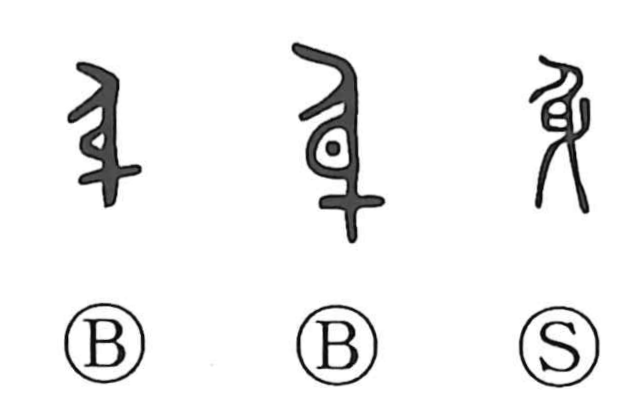

身

Kun: mi, migomoru, karada, mizukara | On: shin
body ・ oneself ・ to become pregnant
Explanation
身 pictures a pregnant person seen from the side. The projecting abdomen is the identifying feature. Its early sense is carrying a child, preserved in the Book of Odes' description of Tai Ren's pregnancy.
The related 孕 makes the child within the body explicit. Words later written with 娠 belong to the same pregnancy vocabulary; as 身 became the general word for the body, other formations could distinguish the more particular sense.
From the pregnant body the reference widens to the body itself, its contents or inner substance, and the person. 身 can therefore mean oneself: the embodied individual who acts, experiences, or bears responsibility. Pregnancy remains the starting image even where the later word is entirely general.